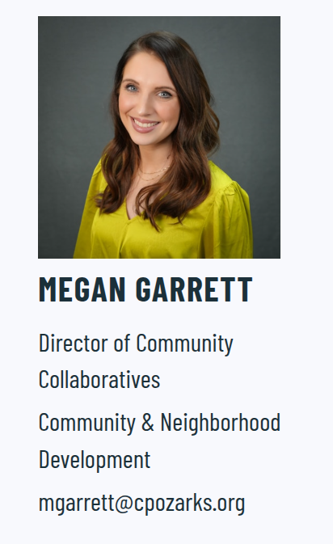

Section 1: Introduction to Environmental Policymaking


Section 1: Introduction to Environmental Policymaking
How does thinking about “politics” help us solve problems?

Section 1: Introduction to Environmental Policymaking

How does thinking about the “environment” help us solve problems?
Section 1: Introduction to Environmental Policymaking
What baseline arguments do problem-solvers need to make BEFORE designing a solution?

For Next Class
Meeting with Nonprofit Reps
